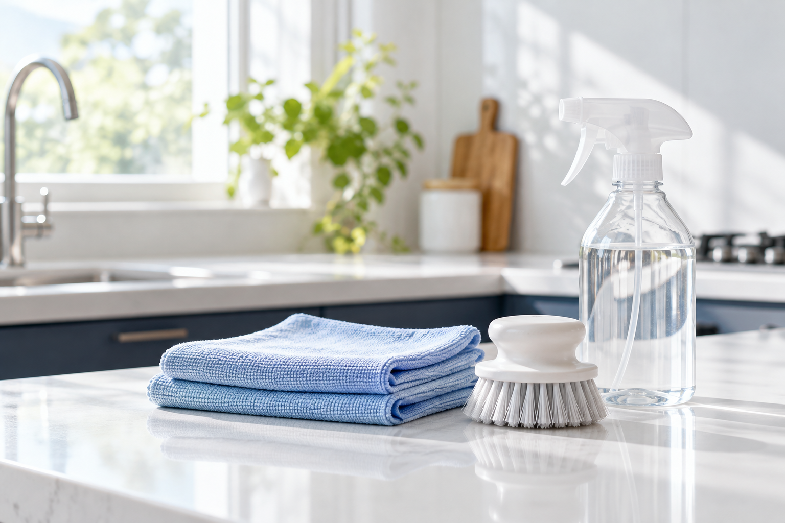

エアコン / ご紹介
機種と台数を、ひとつずつ。
通常タイプ・お掃除機能付きの清掃が案内されています。対応する機種や作業内容は、個別に確認します。
相談準備の例
- メーカー・型番、台数
- お掃除機能の有無（分かる範囲で）
- 気になる状態と希望する時期
仙台市若林区 / HOUSE CLEANING
エアコン、キッチン、水まわり。
家族にも、ご紹介先にも。
清掃の案内だけをひとつのページに。
お願いしたい場所と相談準備を、
見渡しやすくまとめた見本です。

01 / CLEANING GUIDE
項目を選ぶと、案内と準備例が変わります。
表示を試すだけの小さなデモです。
エアコン / ご紹介
通常タイプ・お掃除機能付きの清掃が案内されています。対応する機種や作業内容は、個別に確認します。
レンジフード / ご紹介
レンジフード清掃の案内があります。設備の種類と、特に気になっているところを整理して相談します。
浴室 / ご紹介
浴室清掃についての案内があります。浴槽・床・壁など、気になる場所を言葉にして相談の準備をします。
トイレ / ご紹介
トイレ清掃についての案内があります。設備の種類や、気になる箇所を整理して相談します。
準備項目は制作側の提案で、必須の受付条件ではありません。料金・作業範囲・日程・対応可否は、現在のご案内で確認が必要です。
02 / BEFORE CONSULTING
分かるところからで大丈夫。
今の詳しい案内とあわせて確認してください。
清掃したい設備、台数、気になる箇所を整理します。
汚れの状態や設備の種類など、分かる情報をまとめます。
相談する市区町村と時期を整理します。日程は個別に確認が必要です。
03 / DETAILS
掲載先によって内容や条件が変わることがあるため、この見本には統合した料金表を設けていません。
希望する場所や設備に合った作業内容・費用を、現在の掲載情報と相談先でご確認ください。このページで見積もりや予約の判断は行いません。
04 / EXISTING INFORMATION
仙台市若林区
詳しい条件と実際のご相談は、
現在案内されている窓口をご利用ください。
totalworks.sato@gmail.com
この見本に問い合わせ・入力・予約・送信機能はありません。
jmty.jp/miyagi/ser-hcl/article-1ii557
jmty.jp/miyagi/ser-hcl/article-1ii57k
curama.jp/904907576/
いずれも文字表示のみ。外部への移動や予約は行いません。ご家族やご紹介先が、清掃の内容を知るための見本です。
清掃の案内へ戻る